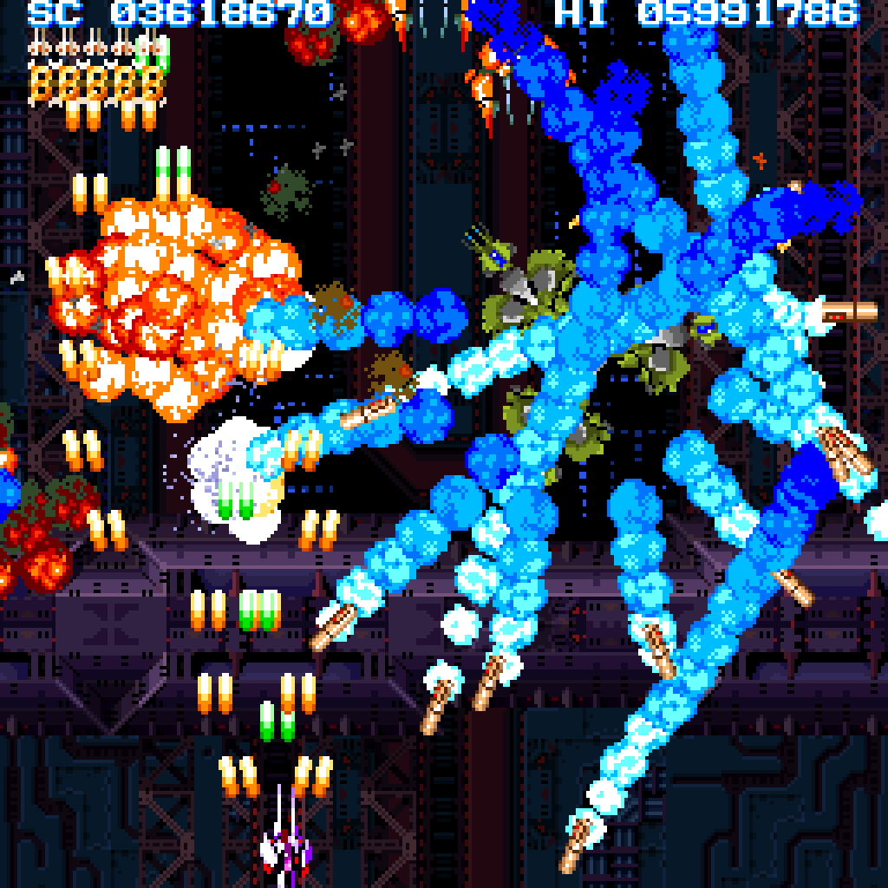
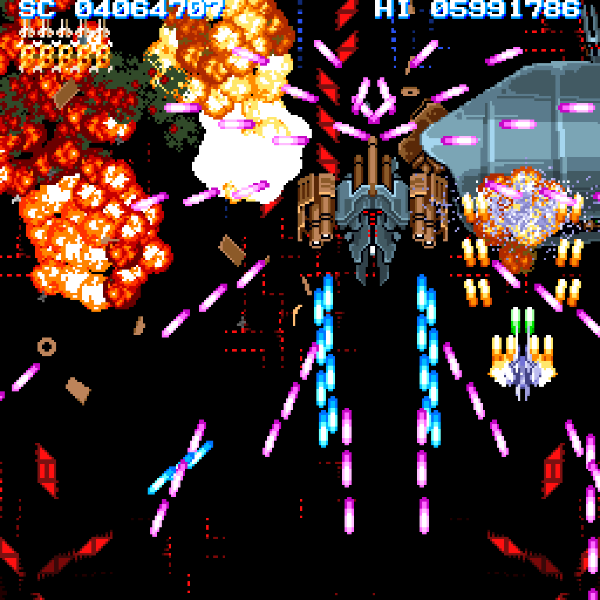
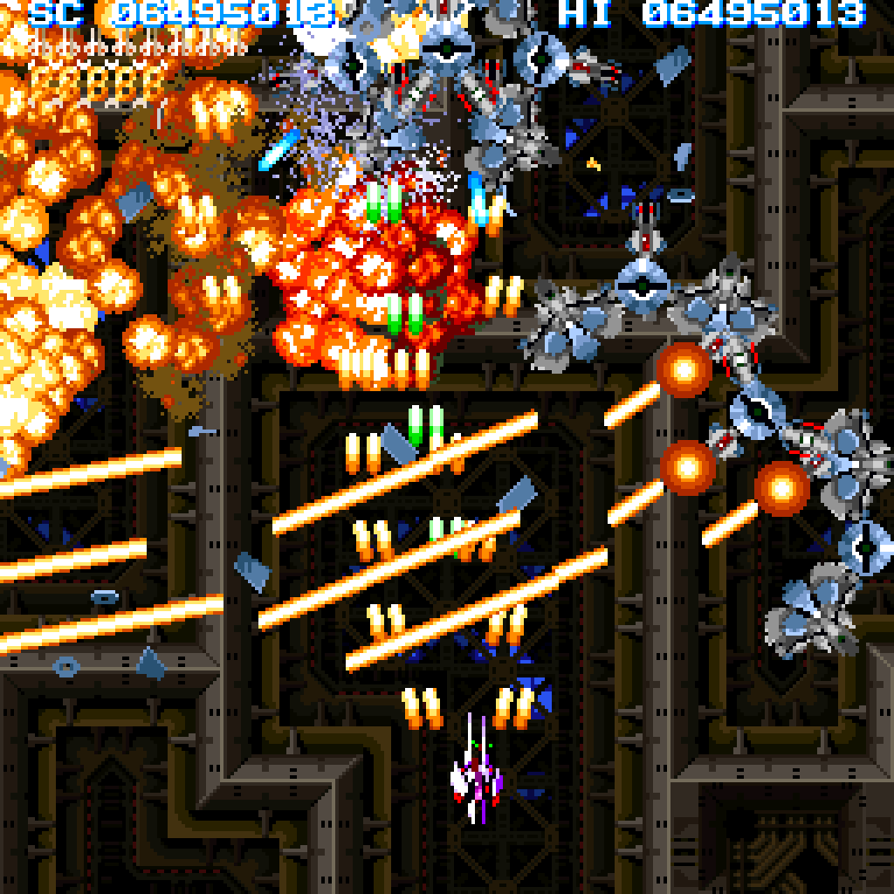
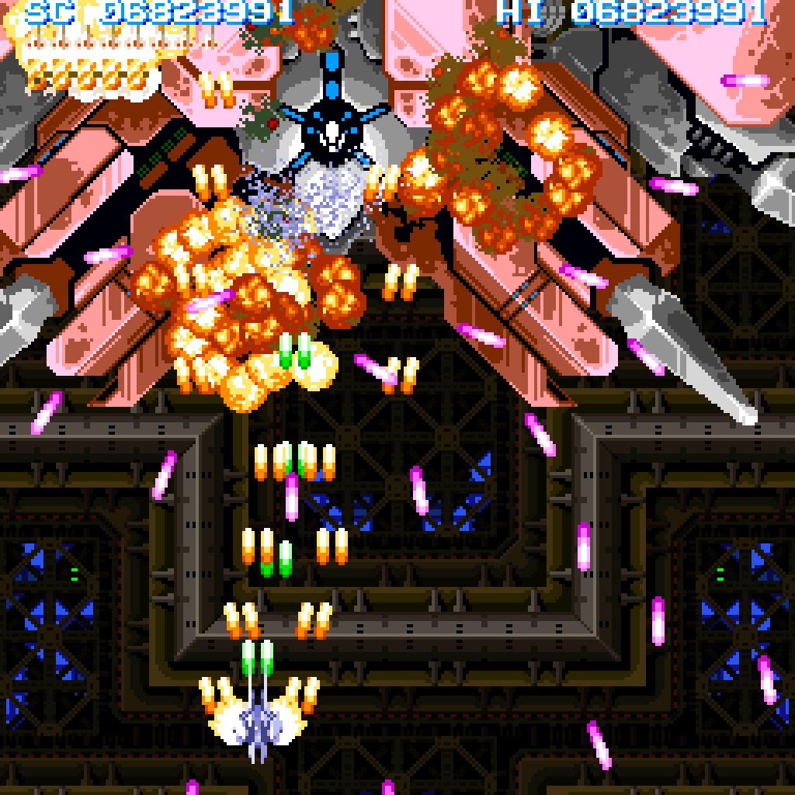

超連射68k
download : 超連射68k ver1.10 for Windows (build 2025/01/01)
sha256sum : 6d8169ef89654fd7986b65eecfb5444dc496ac8e2f888b385a6b531ea3ef2146 CH68_110.xdf
sha256sum : 9c7f62f3da43a3b29dd6499dd32b8d9af5cbd7fa42c7572a2efb2150bb2fb6e8 crs68k_110_build20250101.zip
 
 
2025/01/01 最終更新
文責： よっしん
[戻る]